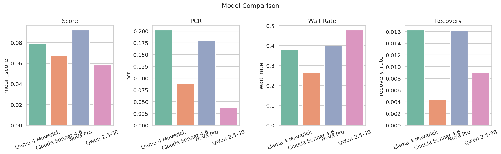
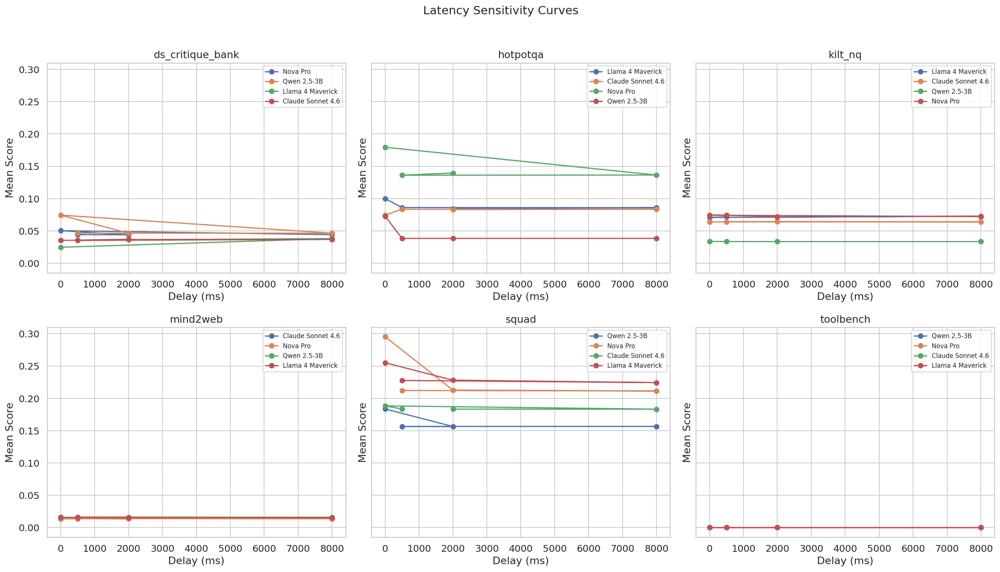
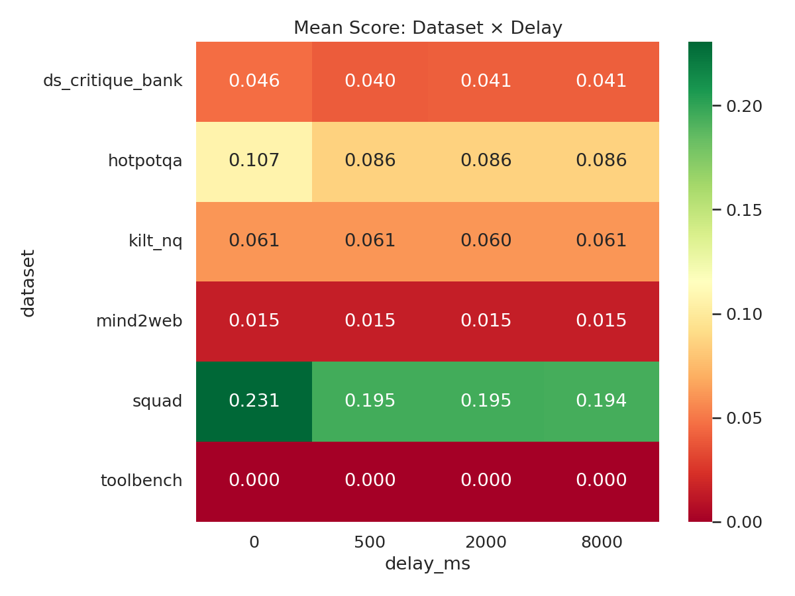
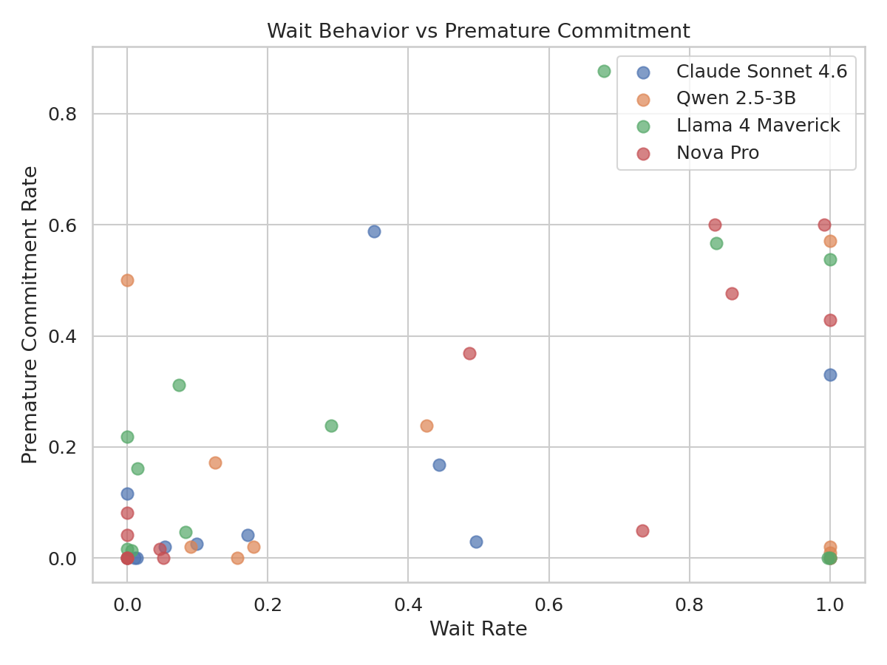

Agentic AI systems
LLM-based agents that plan, invoke tools, coordinate workflows, and operate over production data.
Senior Software Research Engineer at Amazon with 11+ years building production ML/AI systems, large-scale distributed platforms, and research-driven intelligent systems. My work spans experiment design, prototyping novel approaches, and deploying AI systems in real-world environments.
My work sits in the practical middle ground between papers and platforms: rigorous enough to evaluate claims, concrete enough to run at scale, and close enough to production to expose real failure modes.
LLM-based agents that plan, invoke tools, coordinate workflows, and operate over production data.
Model behavior under delayed information, dynamic context, recovery, premature commitment, and temporal drift.
Cost-benefit analysis of RAG: when retrieval helps, hurts, wastes compute, or changes model confidence.
Distributed RCA, microservice telemetry, PageRank-style diagnosis, and production observability systems.
Experience with Distributed PageRank in production-style microservice environments.
Evaluating LLM robustness under delayed information availability.
Quantifying when RAG helps, hurts, and wastes compute across query difficulty strata.
Measuring how often summaries introduce events that have not happened yet.
I review work through both research and industry lenses: methodological rigor, practical relevance, reproducibility, and whether the proposed framework would survive real deployment constraints.
Building production agentic AI systems, orchestration frameworks for tool-augmented LLMs, ML infrastructure, Kubernetes platforms, and large-scale data systems.
A two-phase benchmark for measuring how delayed information changes LLM behavior: premature commitment, waiting, recovery, and decision stability.
A measurement framework for identifying when RAG retrieval helps, hurts, or wastes compute on public-knowledge question answering tasks.
A decentralized and centralized root-cause analysis system for cloud-native microservices using anomaly detection, service graphs, gossip, and Personalized PageRank.
I combine systems engineering depth with research workflows: experiment pipelines, model evaluation, agent orchestration, retrieval infrastructure, and production deployment.
Selected plots from evaluation and retrieval work, included to make the profile closer to a research record than a conventional resume.




I translate research questions into experiment designs, prototypes, evaluation pipelines, and systems that can be tested under production constraints.
I have worked closely with research scientists, applied scientists, and economists on research direction, data generation, model deployment, and evaluation workflows.
I care about writing that makes systems understandable: clear methodology, practical tradeoffs, and enough detail for another engineer to reproduce the work.
I used the awesome GitHub profile README collection as a styling reference, but adapted it for a homepage: visible badges, resume access, skills, experience, project depth, and restrained polish instead of a wall of widgets.
I am interested in rigorous work across agentic AI, LLM robustness, retrieval, temporal reliability, AIOps, Kubernetes platforms, and infrastructure for reliable AI.